We will launch a new magazine 快晴 with 16 young japanese artists'.
We will present the contents of the magazine ahead of completion in the exhibition format over the second term.
organized by nice shop su, Support by LAGON.
〒530-0047
大阪府大阪市北区西天満4-8-1
4-8-1 Nishitemma, Kita-ku, Osaka
平日：正午から午後9時
土日祝：午後3時から午後9時
休館日：毎週木曜日
前期 : 2018年4月9日 - 18日
first half: April 9 - 18
安部悠介 | Yusuke Abe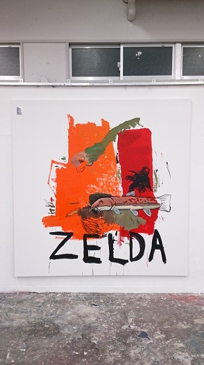
大石峰生 | Takao Oishi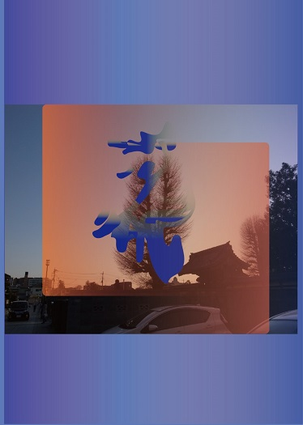
皆藤齋 | Itsuki Kaito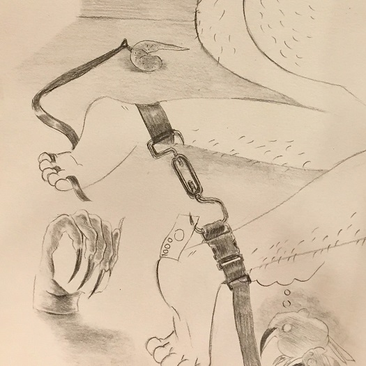
櫻井崇史 | Takashi Sakurai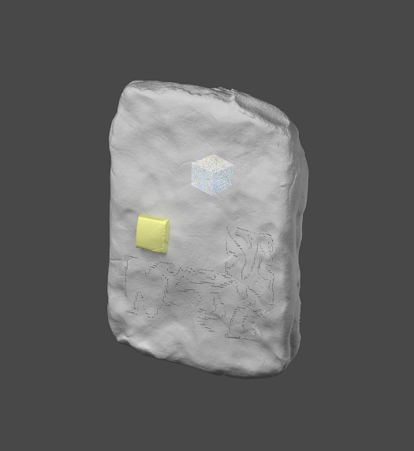
佐貫絢郁 | Ayaka Sanuki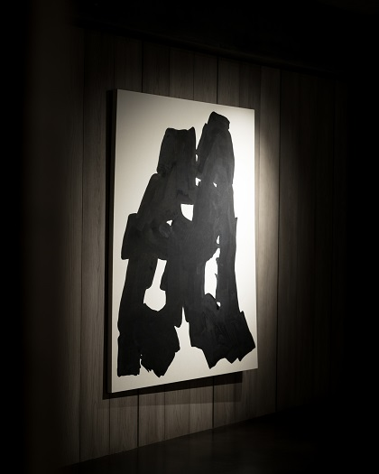
角ゆり子 | Yuriko Sumi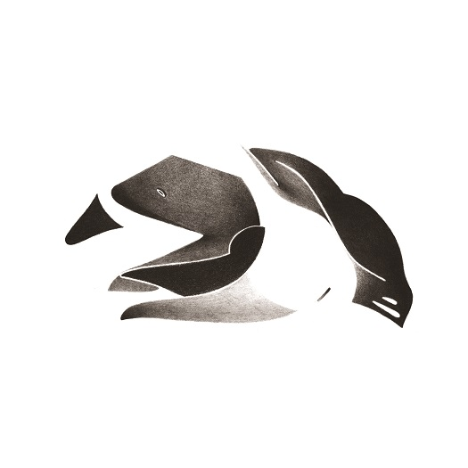
松元悠 | Haruka Matsumoto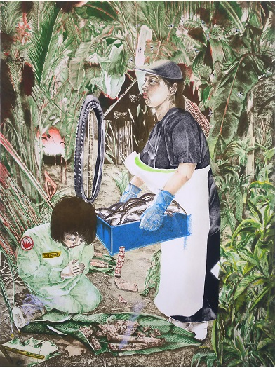
丸目龍介 | Ryusuke Marume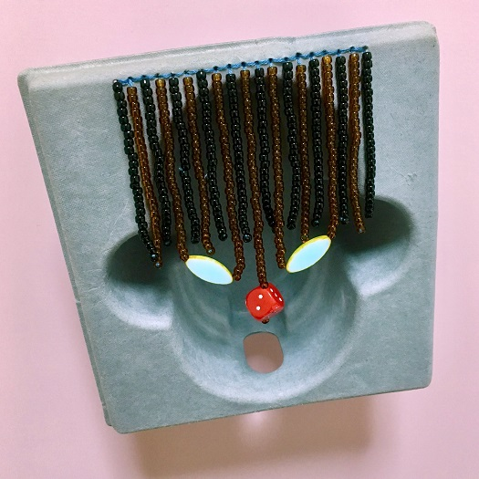
後期 : 2018年4月21日 - 30日
second half: April 21 - 30
Kazquiz
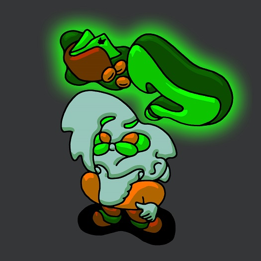
カワイハルナ | Haruna Kawai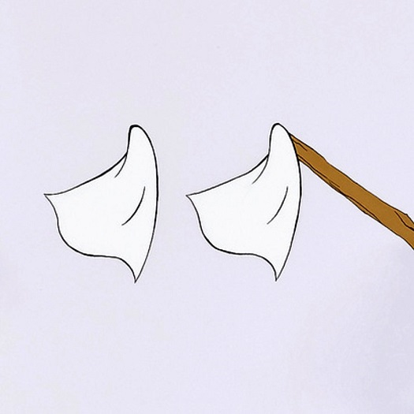
NANOOK
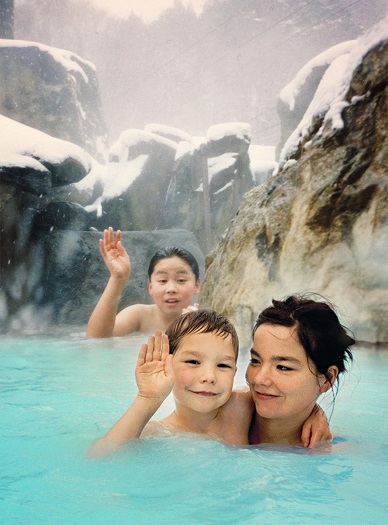
HAKKE
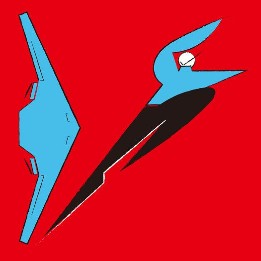
藤田紗衣 | Sae Fujita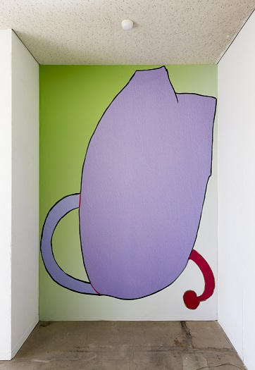
フキン | Fukin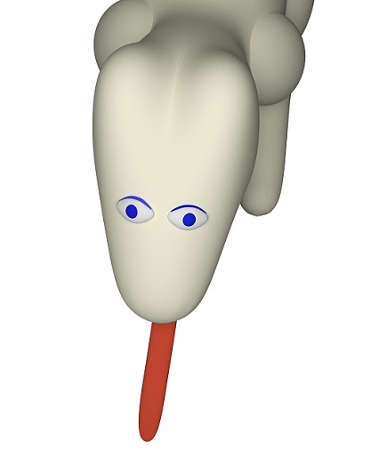
南田真吾 | Shingo Minamida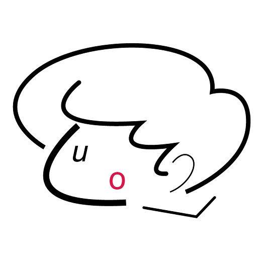
五番街マック | Gobangai Mac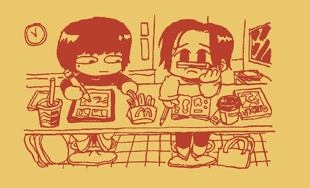
Book
14.7 x 21 cm / 64 pages
+ 8 sheets
12.7 x 18 cm
+ card
8.5 x 5.5 cm
+ poster
29.4 x 42 cm
Curated by Niceshop Su
Supported by Lagon
Riso Print by Papier Machine
Silkscreened by L'institut sérigraphique
Designed by Jean-Philippe Bretin
↵ このページを印刷すると、 2018年4月にペフで開催した展覧会「快晴」の概要が表示されます。